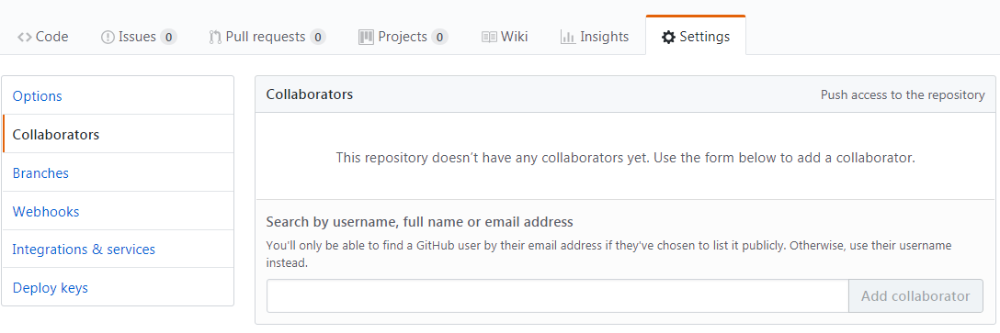

Un tutoriel pour 2 utilisateurs destiné à apprendre les rudiments de Git et du versionnage d'un projet.
Avant de commencer ...
Avant de commencer ce tutoriel, deux utilisateurs doivent être identifiés.
Deux utilisateurs sont nécessaires pour suivre ce tutoriel...
{{userA}} et {{userB}} travaillent sur un même projet.
Configuration initiale
La première étape consiste à créer un compte sur GitHub pour {{userA}} et {{userB}} en se rendant à l'adresse https://github.com
Ensuite, {{userA}} crée un nouveau projet Eclipse et y importe les sources du projet à télécharger en cliquant ici : tuto_git.zip
{{userA}} vérifie que le projet compile et se lance normalement.
Création du dépôt et synchronisation sur GitHub
En utilisant un terminal, {{userA}} se rend dans le répertoire du projet et initialise un dépôt local Git.
git init
Un message dans la console confirme l'initialialisation du répertoire courant comme dépôt Git.
Il faut désormais indiquer à Git quel(s) fichier(s) ou répertoire doivent être exclus du versionnement. Pour cela, {{userA}} ajoute un fichier .gitignore.
touch .gitignore
{{userA}} édite le fichier avec un éditeur de texte et ajoute les patterns à ignorer, en l'occurrence les fichiers compilés et les paramètres personnels d'Eclipse.
/bin/
/.settings/
{{UserA}} enregistre le fichier et quitte.
{{userA}} ajoute ensuite les fichiers à versionner dans l'index du dépôt.
git add -A
{{userA}} vérifie que tous les fichiers du projet sauf les fichiers ignorés ont été mise dans l'index.
git status
{{userA}} valide ces ajouts dans une première révision.
git commit -m "première version du projet"
{{UserA}} vérifie le changement de status des fichiers validés
git status
Cette révision est désormais enregistrée dans le dépôt local. Pour la synchroniser avec un dépôt distant, il faut d'abord en créer un nouveau sur GitHub.
Sur GitHub, {{userA}} crée un nouveau projet, par exemple avec le nom tutorielGit et récupère son adresse
{{userA}} référence ensuite localement ce dépôt comme dépôt distant associé à ce projet.
{{UserA}} pousse sa révision sur le dépôt distant.
git push origin master
La console affiche un message validant l'envoie de cette révision. Sur GitHub, dans le projet tutorielGit, la version apparaît également, ainsi que l'identité de l'utilisateur qui l'a poussée sur le serveur.
Ajout des collaborateurs
{{userA}} enregistre {{userB}} comme collaborateur dans le projet sur GitHub.

{{userB}} se rend dans son workspace Eclipse et récupère une copie du projet à partir de GitHub
Une fois le projet téléchargé, {{userB}} l'importe dans Eclipse en utilisant le menu
FileImport...GeneralExisting projects into workspace
{{userB}} vérifie que le projet compile et s'exécute correctement sur sa machine.
Bravo {{userA}} et {{userB}} !
Vous avez atteint une première étape dans la collaboration. Vous savez partager un projet.
Workflow simple (de type SVN)
Dans Eclipse, {{userB}} modifie le projet en ajoutant la possibilité de quitter l'application au clic sur l'icône de la fenêtre.
{{userB}} ajoute cette nouvelle modification dans l'index de son dépôt.
git add src/tuto_git/Application.java
{{userB}} valide cette modification dans une nouvelle révision.
git commit -m "ajout: sortie de l'app à la fermeture de la fenêtre"
Enfin, {{userB}} synchronise cette nouvelle révision avec le dépôt distant
git push origin master
{{userA}} s'informe de l'état de son dépôt local relativement à la version de tête sur le dépôt distant.
git fetch
{{userA}} constate que le projet a progressé. Il synchronise son dépôt local avec la nouvelle révision sur le dépôt distant.
git pull origin master
Bravo {{userA}} et {{userB}} !
Vous avez atteint une deuxième étape dans la collaboration. Vous savez collaborer sur un projet en suivant une progression synchrone.
Restauration locale d'un ou plusieurs fichiers
Dans Eclipse, {{userA}} modifie le projet pour le rendre invalide en supprimant une ligne ou une bloc de code dans la classe Application.
{{userA}} constate les modifications entre son fichier et la version enregistrée dans l'index.
git diff
{{userA}} récupère la version sauvegardée de son fichier à partir de son dépôt local
git checkout src/tuto_git/Application
Dans Eclipse, {{userA}} vérifie que le fichier a bien été restauré à partir de la dernière révision.
Travail collaboratif sans conflit
{{userA}} introduit une nouvelle modification sur le projet en ajoutant dans la classe Application l'instruction setLocationRelativeTo(null) permettant de centrer la fenêtre par rapport à l'écran.
En parallèle {{userB}} introduit une nouvelle modification sur le projet en modifiant la taille du bouton dans la classe Vue.
{{userA}} et {{userB}} valident tous les deux localement leur modification
Pour {{userA}} :
git add src/tuto_git/Application.java
git commit -m "ajout du centrage de la fenêtre"
Pour {{userB}} :
git add src/tuto_git/Vue.java
git commit -m "modification de la taille du bouton"
D'abord, {{userA}} pousse sa révision sur GitHub.
git push origin master
Ensuite, {{userB}} pousse sa révision sur GitHub.
git push origin master
L'envoi est rejeté par le serveur !
{{userA}} et {{userB}} ont fait progresser le projet chacun de leur côté en parallèle. Le projet a divergé : ils sont chacun sur une branche différente. Il est nécessaire de fusionner ces branches divergentes pour retrouver l'unicité du projet.
{{userB}} récupère la dernière révision depuis le serveur
git pull origin master
Lorsque la récupération s'est effectuée, la fusion entre les deux branches se fait de manière automatique car aucun conflit n'est détecté.
{{userB}} peut désormais pousser sa révision sur le serveur, car elle intègre désormais les modifications faites en parallèle par {{userA}}.
git push origin master
Bravo {{userA}} et {{userB}} !
Vous avez atteint une troisième étape dans la collaboration. Les développements de branches parallèles sont quasi impossible à empêcher lorsque plusieurs personnes travaillent sur un même projet. Vous avez appris à résoudre une fusion simple, lorsqu'aucun conflit n'apparaît.
Gestion de conflit
{{userA}} et {{userB}} modifient en parallèle la classe Application en ajoutant un titre différent à la fenêtre avec la méthode setTitle.
{{userA}} et {{userB}} valident tous les deux localement leur modification
git add src/tuto_git/Application.java
git commit -m "ajout d'un titre à la fenêtre"
D'abord, {{userB}} pousse sa révision sur GitHub.
git push origin master
Ensuite, {{userA}} pousse sa révision sur GitHub.
git push origin master
L'envoi est à nouveau rejeté par le serveur !
Comme précédemment, {{userA}} et {{userB}} ont fait diverger le projet et il faut désormais fusionner leurs modifications.
{{userA}} récupère la dernière révision à partir du serveur.
git pull origin master
Un conflit est détecté !
Les fichiers en conflit ont été modifiés par Git et attendent une résolution manuelle de la part de l'utilisateur.
{{userA}} s'informe des conflits
git diff
Dans l'éditeur d'Eclipse, {{userA}} résoud le conflit directement dans le code en "nettoyant" les marqueurs laissés par Git.
Ensuite, {{userA}} peut versionner cette nouvelle révision et la pousser sur GitHub.
git add src/tuto_git/Application.java
git commit -m "Conflit résolu sur le titre de la fenêtre
git push origin master
{{userA}} vérifie sur GitHub que la dernière révision est la sienne.
{{userB}} récupère la dernière révision qui inclus la résolution du conflit.
git pull origin master
Bravo {{userA}} et {{userB}} !
Vous avez atteint une quatrième étape dans la collaboration. Vous savez désormais résoudre un conflit sans paniquer, lorsque deux collaborateurs ont apporté des modifications dans le(s) même(s) fichier(s).
Ce tutoriel est terminé !
Vous avez terminé ce tutoriel et vous êtes maintenant capable de collaborer sur un projet en utilisant un outil puissant et incontournable.
Cependant, Git est un outil très complexe et le maîtriser vous demandera de nombreuses années d'expérience !